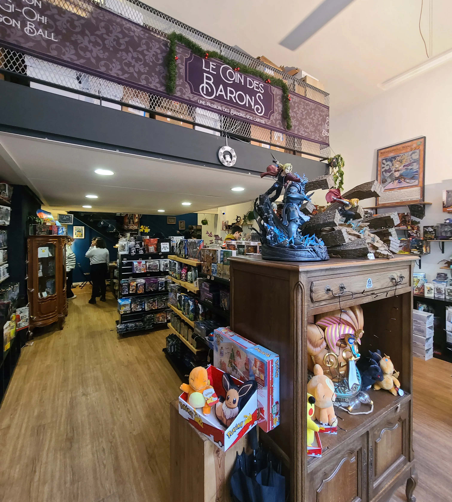
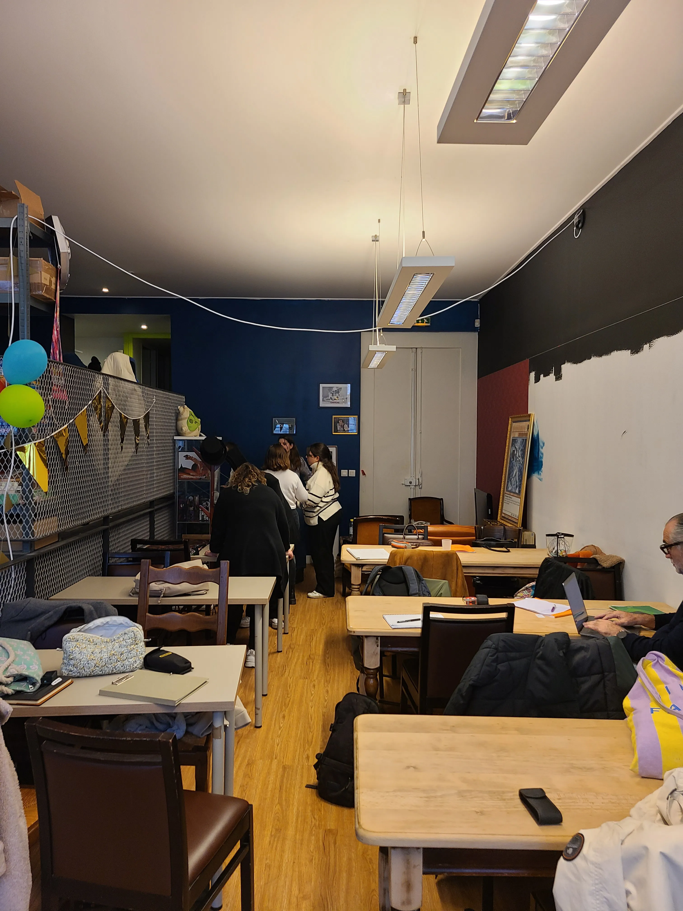

Créer un commerce, ce n’est pas seulement vendre un produit. C’est raconter une histoire, capter l’attention, donner envie d’entrer… et de rester.
Pour cette enseigne implantée à Bordeaux et spécialisée dans la vente de cartes de jeu à l’unité, l’enjeu allait bien au-delà d’un simple réaménagement. Déjà présente dans plusieurs villes en France, chaque boutique avait sa propre identité.
L’objectif était donc de créer un concept fort, identifiable au premier regard, capable d’être décliné dans différents points de vente tout en conservant une vraie cohérence.
À Bordeaux, le projet devient un terrain d’expression.
Repenser la circulation, fluidifier le parcours client, sublimer les produits… et surtout transformer l’achat en une véritable expérience.


Ma mission a été de repenser entièrement l’univers du point de vente pour en faire un lieu immersif, mémorable et performant.
J’ai imaginé un concept hybride, entre pub anglais et “bar à cartes”. Un lieu où les produits ne sont plus simplement exposés, mais mis en scène comme de véritables pièces de collection.
Le cœur du projet : un bar à cartes central, véritable point d’ancrage, autour duquel s’organise toute la circulation. Le client ne subit plus le parcours, il le découvre.
Au-delà du concept, j’ai accompagné le client sur l’ensemble du projet : choix du mobilier et des matériaux, définition des teintes, travail graphique, conception des agencements sur mesure, jusqu’au chiffrage.
Un espace dédié aux tournois a également été intégré, mêlant différents mobiliers et ambiances pour créer un lieu vivant, évolutif et fédérateur.
Sécuriser chaque étape, créer une identité forte et cohérente… et surtout faire de ce lieu un véritable levier de performance, capable d’augmenter la fréquentation et le chiffre d’affaires.



Ce guide stratégique a été conçu spécialement pour vous professionnels.
Il peut déjà vous faire gagner du temps, de l'argent ... et quelques bonnes idées.
Chaque projet résout un problème différent